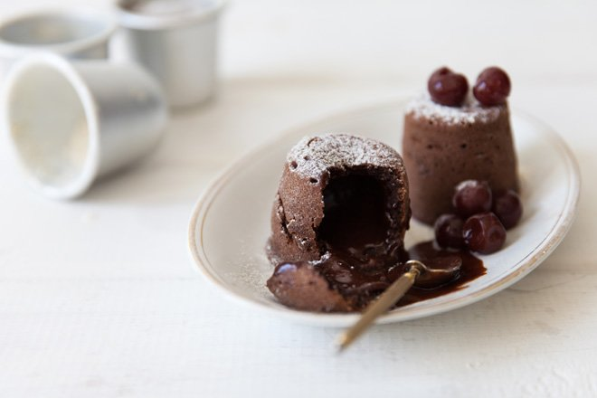

Chocolate fondant

In case you were pondering the name of this pudding, fondant is the French word for ‘melting’. What you are looking for is the melting, gooey chocolaty centre. Bake on.
Melt the chocolate and butter in a double boiler. Once melted, set aside and let it cool.
Whisk the egg, egg yolks and sugar together until creamy. Scrape the seeds out of the vanilla pod and add them to the egg mixture.
Fold the flour into the egg mixture and then add the melted chocolate and butter, mixing it together well.
Brush the dariol moulds with melted butter and dust lightly with flour.
Pour the fondant mixture into the moulds and refrigerate for an hour before baking.
Heat your oven to 200°C and bake the fondants for 10–12 minutes. Make sure not to overbake as you still want them to be runny on the inside.
Remove from the oven, cool for 2 minutes and then turn the fondants out gently.
Serve with cream, ice cream, berries or macerated cherries.